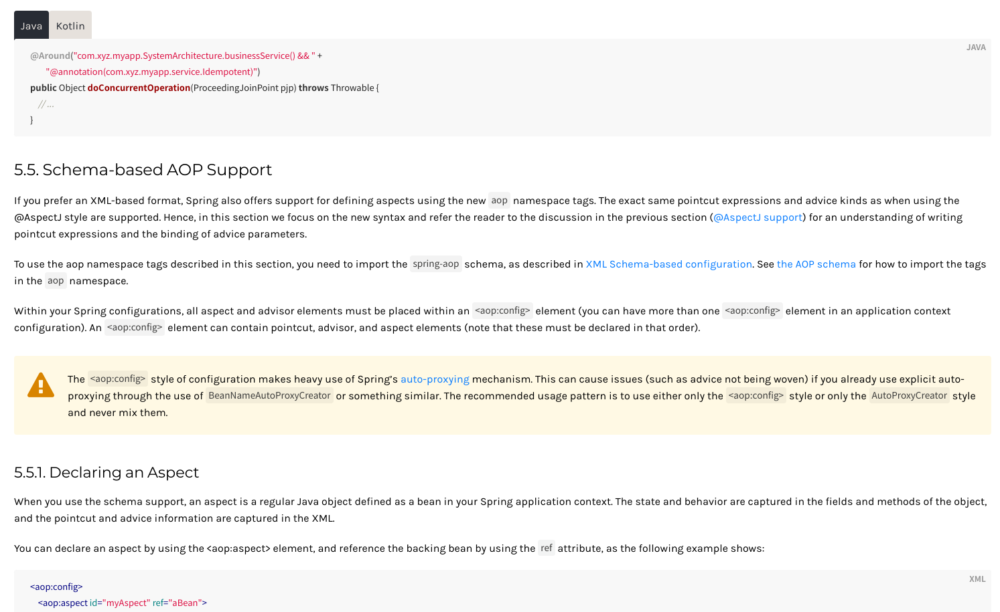
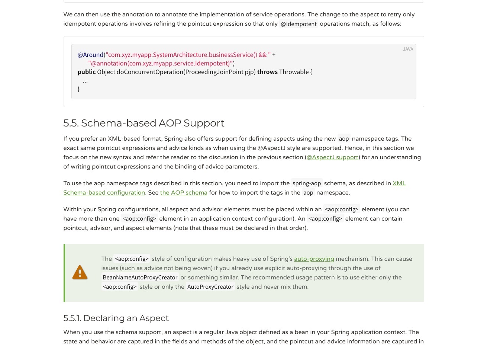

写这个博客的原因：
- 看看自己每天干了啥
- 以后自己可以看看过去的自己在干什么，就像时光穿梭一样，很酷
- 可以将一天中的一些小想法记录下来，这些想法不适合当成博客发布出来，有的时候更多的是吐槽
- 我觉得这是一件很有意义的事情，像 b 站 up 主一样拍 vlog 记录生活，可以记录下生活有趣的瞬间，虽然我的生活可能很无趣，但也记录了我生活的点点滴滴，毕竟平平淡淡才是真。我不会拍 vlog ，也不擅长在镜头前表现自己。所以我这个是 no video blog。
10 月 4 号
今天是 10 月 4 号，这是我第一天开始记录。今天早上和同学去松山湖图书馆坐了一天，没错就是坐了一天，午饭也没有吃 =_=。到晚上一起去吃了烤肉，不是很好吃。。回来后枯燥的一天结束了。
10 月 5 号
今天到早上 11 点才起床，不是因为我太懒了，是某得办法。昨天晚上要睡觉的时候同学跑来跟我说它把服务器 /usr/bin 目录下的东西误删了。。。我登录上去一看，好家伙。。何止 /usr/bin 目录没了。。/usr 目录下所有东西都没了。。=_=||还好没有删什么重要数据,，然后就搞到很晚才睡。等到中午差不多就和同学去吃饭然后去图书馆呆了一天，不得不感叹枯燥的生活。。。别人国庆都去快乐了啊啊啊。我也很想去快乐啊！我也想要诗和远方！但是不知道去玩什么…太难了我！
今天看了下 Spring Framework 发现发布了新版本，（虽然是 9 月 30 号更新的，但是我一直开着 5.1.9 的文档看根本没发现。。邮件也没看哈哈哈）从 5.1.9 更到了 5.2.0，更直接的感受就是它的官方文档的样式变好看了，换了新字体，选中文字颜色不一样了，而且代码样例多了 Kotlin 版本的，看了下 Kotlin 的样例使用方法和 Java 一样。
下面是今天看的 AOP 部分的截图，第一张是更新后的，第二张是更新前的。阅读体验大大提升：


10 月 6 号
今天去滑了冰，贼快乐！点亮新技能哈哈哈。